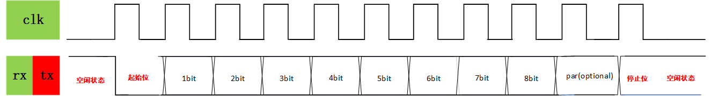
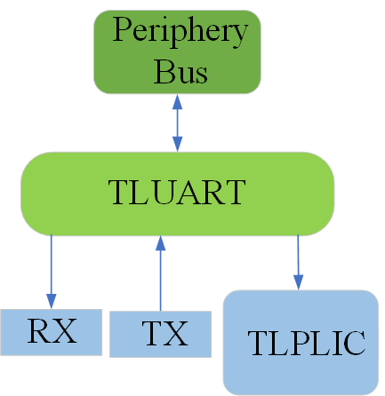

2.3 UART
2.3.1 UART Technical Specification
Description
UART is a universal serial data bus designed for asynchronous communication. The bidirectional nature of the bus facilitates full-duplex transmission and reception. UART operates by transmitting data bits one by one. Typically, three wires are utilised to complete the communication: the transmission line (TX), the reception line (RX), and the ground line (GND). The TX and RX of both parties must be cross-connected, while the GND can be connected for normal communication.
Features
2-pin full-duplex external interfaces
8-bit data word, optional even or odd parity bit per byte
1 stop bit
32 x 8b RX buffer
32 x 8b TX buffer
Programmable baud rate
2.3.2 Theory of Operation
Communication Protoco
During idle periods, the TX/RX serial lines maintain a high state. Data transmission commences with a START bit, when the high idle state transitions from 1 to 0, followed by 8 data bits. The least significant bit is transmitted first. If the parity feature is enabled, an odd or even parity bit is inserted after the data bits. Conclusively, a STOP bit, maintained at logic 1, signifies the completion of one byte of data transfer.

Transmission
Writing to WDATAregister enqueues a data byte into the 32-byte deep write FIFO, thereby triggering the transmit module to initiate UART TX serial data transfer. The TX module dequeues the byte from the FIFO and shifts it bit by bit onto the UART TX pin on the positive edges of the baud clock.
In the event that TX is not enabled, data written into the FIFO will be accumulated and transmitted once TX is enabled.
Upon the FIFO becoming empty as part of the transmission process, a TX FIFO done interrupt will be generated when the final byte has completed transmission. This interrupt is distinct from the TX FIFO watermark interrupt.
Reception
The RX module oversamples the RX input pin at 16 times the requested baud rate. Upon detecting a low state on the input, the receiver verifies that the line remains low half a bit-time later to confirm the START bit. If the line returns to a high state, the potential glitch is disregarded. After identifying the START bit, the RX module samples at the center of each bit-time, collecting incoming serial bits into a character buffer. If the STOP bit is detected as high and the optional parity bit is correct, the data byte is enqueued into the 32-byte deep RX FIFO. The data can then be retrieved by reading the RDATA register.
2.3.3 Design Verification
Goals
Verify UART IP features by running dynamic simulations with a SV/UVM based testbench
Design features
For detailed information on UART design features, please see the UART Technical Specification.
Testbench architecture
Top level testbench is located at /trunk/hw/d2dv100_top/dv/dut_MEISHAV100_TOP_wrapper.sv. It instantiates the TOP DUT module /trunk/hw/d2dv100_top/rtl/top/MEISHAV100_TOP.sv. In addition, it instantiates the following interfaces, connects them to the DUT and sets their handle into uvm_config_db:
Clock and reset interface
Tilelink host interface
UART IOs
Global types & methods
All common types and methods defined at the package level can be found in uart_env_pkg
TL_agent
UART instantiates tl_agent which provides the ability to drive and independently monitor random traffic via TL host interface into UART device.
UART_agent
UART agent is used to drive and monitor UART items, which also provides basic coverage on data, parity, baud rate etc. These baud rates are supported: 9600, 115200, 230400, 1Mbps(1048576), 2Mbps(2097152)
2.3.3.1 Testplan
This validation environment encompasses a substantial amount of supplementary code; however, the parent classes may introduce anomalies or superfluous functionalities. Consequently, it is permissible to directly alter the inherited parent class to the corresponding UVM base class, as necessitated
2.3.3.1.1 Develop an agent
In the environment written this time, uart, as slave_agent, is driven by soc, so uart_agent only contains a driver, which is used to collect signals from the uart port during the test.
uart_agent_cfg.sv
The baud rate, parity check bit and other attributes of uart are defined, and a uart interface is declared for monitor to collect data. There are 7 functions in this file, which are:set_uart_period_glitch_pct、get_uart_period_glitch_pct、set_baud_rate、set_parity、set_max_drift_cycle_pct、get_max_drift_cycle_pct、reset_asserted、reset_deasserted.
uart_agent_pkg.sv
The library and files used by uart_agent are imported, and some enumerated variables are defined, such as BaudRate(baud rate), transmission direction (single, dual, quad), etc., which is convenient for us to use.
uart_agent.sv
A uart_monitor and uart_agent_config are defined, uart_if as set in config_db is passed to cfg.uart_if, and uart_cfg is set to the database.
uart_driver.sv
The uart_driver class inherits from dv_base_driver and is used to drive transmission and receive operations in the simulation environment of UART. It is responsible for getting the data item uart_item from the sequencer and driving it to the UART interface. This class mainly simulates the receiving process of data by controlling the received signal of the UART interfaceuart_rx.
Main tasks and functions:
run_phase:run_phase is one of the UVM simulation phases, in which the driver first calls the reset_signals method to reset the UART interface signal, and then enters the get_and_drivetask, continuously fetching data from the sequencer and driving the transmission.
reset_signals:
This task is used to reset the UART received signal (’ uart_rx ‘) to ensure that the signal is in a known state at the start of the simulation.
set_rx :
The set_rx task is responsible for setting the value of the received signal (uart_rx) of the UART, while randomly introducing some small amplitude signal failures (usually 10% of the clock cycle) according to the configuration. This function is used to simulate the signal jitter and faults that may exist in real hardware, so as to test the fault tolerance of the system to these abnormal conditions.
get_and_drive:
This task takes the data item (uart_item) from the sequencer (seq_item_port) and drives it to the UART interface based on the information in the configuration and request.
If parity is enabled (en_parity) or the parity configuration is overridden in the request ( ovrd_en_parity), it transmits all data bits including the parity bits to the ‘uart_rx’ signal.
This task also handles the situation during a reset, and if a reset signal is detected, the currently transmitted data item is abandoned.
wait_uart_rx_cycle:
The wait_uart_rx_cycle task is used to wait for the next clock cycle when the UART receives a signal. This can be done by waiting for the callback function (drv_rx_cb) in the simulation environment or by detecting the reset signal.
The task monitors the reset signal or UART clock event through the fork mechanism and chooses to end the current cycle based on the simulation.
uart_if.sv
The uart interface provides data for the monitor. Contains the 2 basic signals of uart and some signals for debugging.
uart_item.sv
The uart_item class is a UVM class that inherits from uvm_sequence_item and represents the basic data unit that is transferred in UART communication. This class defines the basic structure of a UART packet, including the start bit, stop bit, data, parity and other information, and provides some constraints and methods to control the randomization and use of these fields.
uart_monitor.sv
tx_analysis_portand rx_analysis_port are used to collect data transmitted and received by the UART respectively and to pass this data to the scoreboard for further analysis and verification.
Main tasks and functions:
collect_tx_data：
This task monitors the UART transmission signal (uart_tx ) and collects data for each transmission. When uart_tx is low and tx_monitor is enabled, the data collection process begins.
The collection process consists of getting the start bit, the data bit, the check bit (if enabled), and finally the stop bit. Each bit is collected via a callback function of the monitor interface. After the collection is complete, the task checks whether the check bit is correct and passes the collected data to the tx_analysis_port for further analysis by the scoreboard.
collect_rx_data：
This task monitors the UART reception signal (uart_rx) and collects data on each reception. Similar to the collect_tx_datatask, data collection begins when uart_rx is low and rx_monitor is enabled.
The collection process consists of getting the start bit, the data bit, the check bit (if enabled), and finally the stop bit. The collection of each bit is also done through the callback function of the monitor interface.
After the collection is complete, the task checks whether the check bit is correct and passes the collected data to the rx_analysis_port for further analysis by the scoreboard.drive_tx_clk and drive_rx_clk:
drive_tx_clkanddrive_rx_clkare used to drive the transmission and reception of the clock signal of the UART, respectively, to ensure that the data is collected within the correct clock cycle.
mon_tx_stable:
The mon_tx_stable task is responsible for monitoring the stability of the UART transmitted signal and checking whether the signal remains stable for a specified clock period.
process_reset:process_reset are used to reset the UART. During the reset, data collection is stopped. After the reset is complete, the data collection process is restarted.
uart_logger.sv
The uart_logger class is a UVM component that inherits from the uvm_component and is used to capture the log data transferred from the UART and store it in a log file or print it in a simulation log.
uart_base_agent.core
.core file is the configuration file that fusesoc uses to manage the project and can copy other written files and then make changes to several parts.
2.3.3.1.2 Develop an env
uart_scoreboard.sv
Define four queues to store the expected and actual write data and read data. The expected data is obtained from the tl-agent, and the actual data is obtained from the uart-agent. Retrieve the uart data using uvm_blocking_get_port and compare the expected data with the actual data. However, the current scoreboard has some problems and is not used in the current validation environment.
uart_env.sv
uart_agent, uart_agent_cfg, uart_scoreboard, and uvm_tlm_analysis_fifo (connecting uart_scoreboard and uart_monitor) are defined.
uart_env_pkg.sv
The libraries and files used by uart_env are imported.
uart_base_env.core
The configuration file for uart_env, which provides dependencies for uart_test.
2.3.3.1.3 Develop an sequence
seq_lib.sv
Base sequence of uart. The current environment uses uart_item in the agent folder that is the same as this sequence. Therefore, this file is not used currently.
2.3.3.1.4 Develop an test
uart_test.sv
The test is modified by referring to the tl-test written in the environment.
uart_macros.svh
The register base address and offset of uart are defined for our convenience.
uart_test.v
Refer to tlul_test.sv to write, mainly to change the main_phase code. The rest just defines a uart_if in uart_base_test_cfg and a uart_env in uart_base_test.
UART interface definition：
The uart_if interface is defined in the uart_base_test_cfg for communicating with the UART environment.
The UART environment is initialized：
Initialize the uart_env environment in uart_base_test, which is responsible for configuring and monitoring the behavior of the UART.
Register configuration：
In main_phase, data is written to the register of the UART mainly through the TileLink (TL) protocol agent (TL-agent ) to complete the register configuration. Compared with the Register Abstraction layer (RAL), TL-agent can interact with hardware more directly and is suitable for lower-level verification scenarios.
Use TL-agent to configure UART control registers, including DIV, TXCTRL, RXCTRL and so on.
After the configuration, the TL-agent writes the generated data to uart_txfifo.
2.3.4 Hardware Interfaces
The following table shows the uart connection method:
| Master_Port | Slave_Port |
|---|---|
| Master_Tx | Slave_Rx |
| Master_Rx | Slave_Tx |
| GND | GND |
The following diagram shows the system block diagram of UART：

Block Diagram
2.3.5 Registers
Control Register
A serial port control register is a specialized type of register within communication interfaces, responsible for managing the configuration and control of serial communication lines. These registers are essential for facilitating and overseeing data transfers between devices that employ serial communication protocols.
| offset | Name | Description |
|---|---|---|
| 0x00 | txdata | Transmit data register |
| 0x04 | rxdata | Receiver data register |
| 0x08 | txctrl | Transmit control register |
| 0x0C | rxctrl | Receive control register |
| 0X10 | ie | UART interrupt enable |
| 0X14 | ip | UART interrupt pending |
| 0X18 | div | Baud rate divisor |
The functions typically managed by these registers include:
Baud Rate Divisor Register(div)
It determines the speed of data transmission in bits per second (baud). The div register designates the divisor employed for the baud rate generation of the Tx and Rx channels. The input clock is derived from the bus clock. The reset value of the register is configured to div_init, and, given the anticipated frequency of the tlclk, it is calibrated to yield a 115200 baud output upon reset.
| tlclk (MHz) | Target Baud (Hz) | Divisor | Actual Baud (Hz) | Error (%) |
|---|---|---|---|---|
| 500 | 31250 | 16000 | 31250 | 0 |
| 500 | 115200 | 4340 | 115207 | 0.0064 |
| 500 | 250000 | 2000 | 250000 | 0 |
| 500 | 1843200 | 271 | 1845018 | 0.099 |
| 750 | 31250 | 24000 | 31250 | 0 |
| 750 | 115200 | 6510 | 6510 | 0.0064 |
| 750 | 250000 | 3000 | 3000 | 0 |
| 750 | 1843200 | 407 | 407 | 0.024 |
Transmit Data Register (txdata)
If the FIFO is capable of accepting a new entry, then writing to the txdata register queues the characters contained within the data field to the transmitting FIFO. Reading from txdata returns the current value of the full flag and sets the data field to zero. The full flag signifies whether the transmitting FIFO can accommodate the new entry. Post-setting, writes to the data field are disregarded.
| Bits | Field Name | Attr. |
|---|---|---|
| [7:0] | data | RW |
| [30:8] | Reserved | |
| 31 | full | RO |
Receive Data Register (rxdata)
The read rxdata register extracts a character from the received FIFO and returns its value in the data field. The empty flag indicates whether the received FIFO is devoid of contents. Upon being set, the data field does not contain valid characters. Writes to rxdata are ignored.
| Bits | Field Name | Attr. |
|---|---|---|
| [7:0] | data | RW |
| [30:8] | Reserved | |
| 31 | full | RO |
Interrupt Registers (ip and ie)
The ip register is a read-only register that indicates pending interrupt conditions, while the read-write ie register controls which UART interrupts are enabled. ie was reset to 0.
| Bits | Field Name | Attr. |
|---|---|---|
| 0 | txwm | RW |
| 1 | rxwm | RW |
| [31:2] | Reserved |
2.3.6 Checklist
Design Checklist
| Type | Item | Resolution |
|---|---|---|
| Documentation | UART SPEC | Done |
| RTL | Design | Done |
Verification Checklist
| Type | Item | Resolution |
|---|---|---|
| Documentation | VIP | Done |
| RTL | Design | Done |